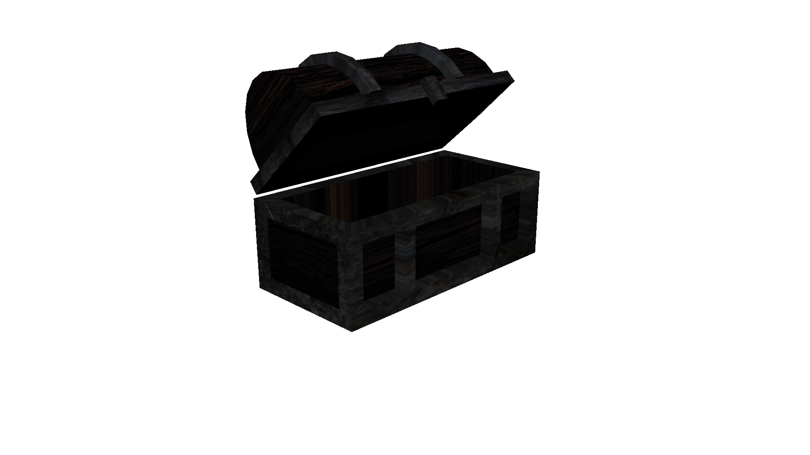
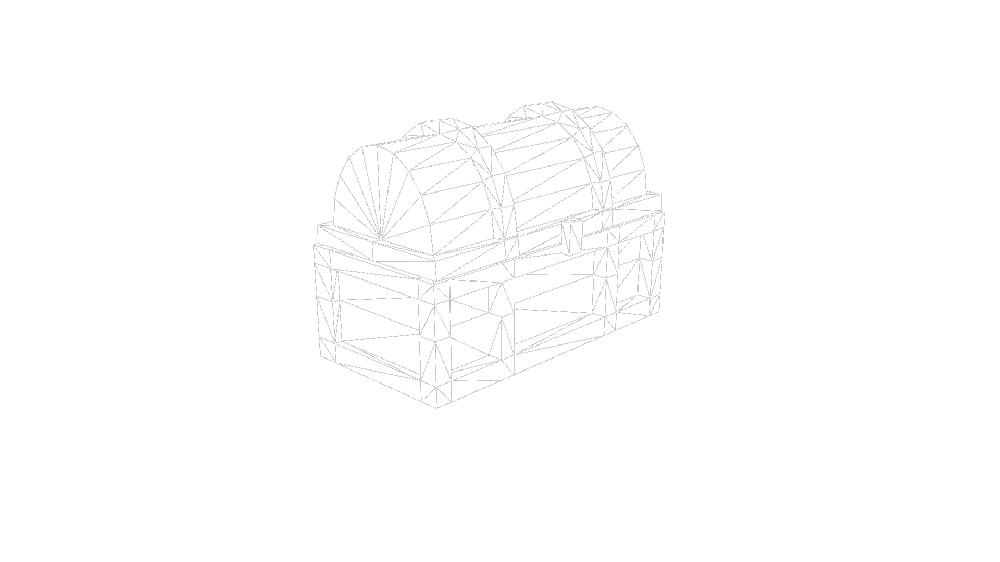
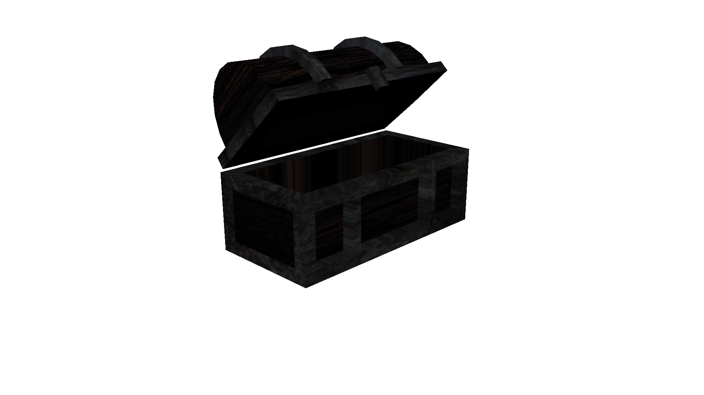
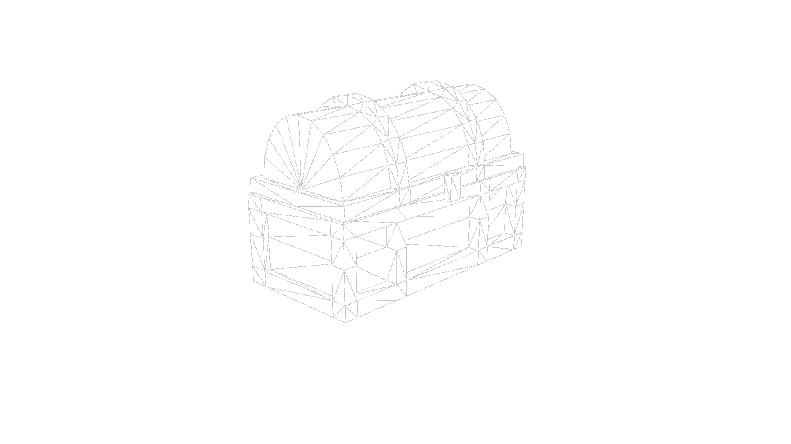
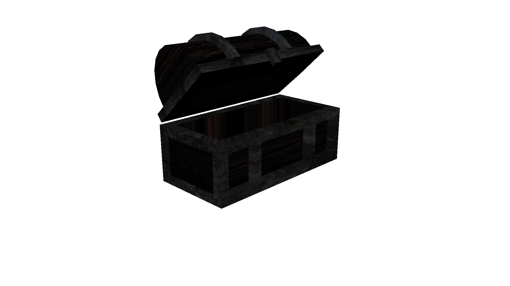
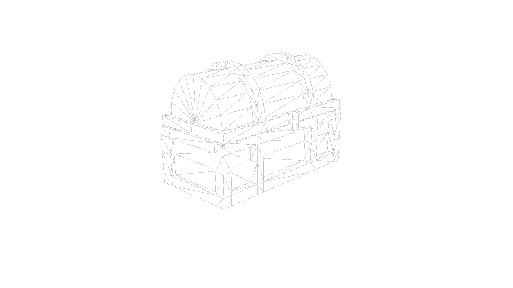

I found this little toy chest on a website and knew it was a top contender for my chest. What made it win out over other chests I was choosing between is the fact that it has the the 'metal' edges, which I figured would provide a challenge while not being too hard.




These coins did not quite turn out as shiny as I wanted them to be. I chose not to use too many of them as to not slow down the rendering by a major amount.
The texture for the metal bands uses a phong shader, intended to help give a metallic sheen. The wood texture is a standard lambert shader. I used the UV editor to align the wood grain horizontally. Both animations and the shaded images were rendered using Maya's Hardware Renderer, while the wireframe images were rendered with Maya's Vector renderer.